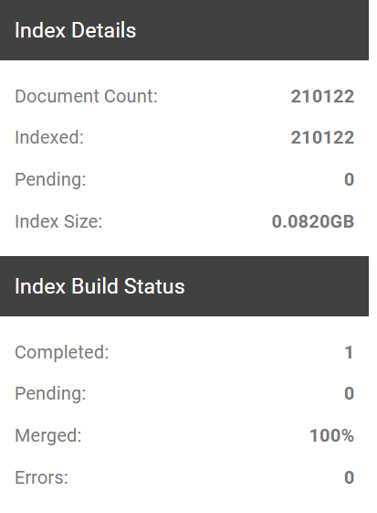

Complete the following steps to build or rebuild the case index. Rebuilding is needed when the case changes, (for example, if additional documents are imported into a case):
Getting started:
Complete
Select an appropriate time to rebuild your indexes.
If users might be logged on, alert them that performance may be affected while you rebuild your indexes.
In the Index Tools pane, click one of the following buttons:
Full Build: Rebuild the index for all documents in the case database.
Incremental Build: Rebuild the index only for documents that have not yet been indexed.
While your case is being built, you can view Index Details and the Index Build Status as shown in the following figure. Furthermore, you can monitor the status of the index job by visiting the Job Manager. To learn more about the Job Manager, see

Related Topics